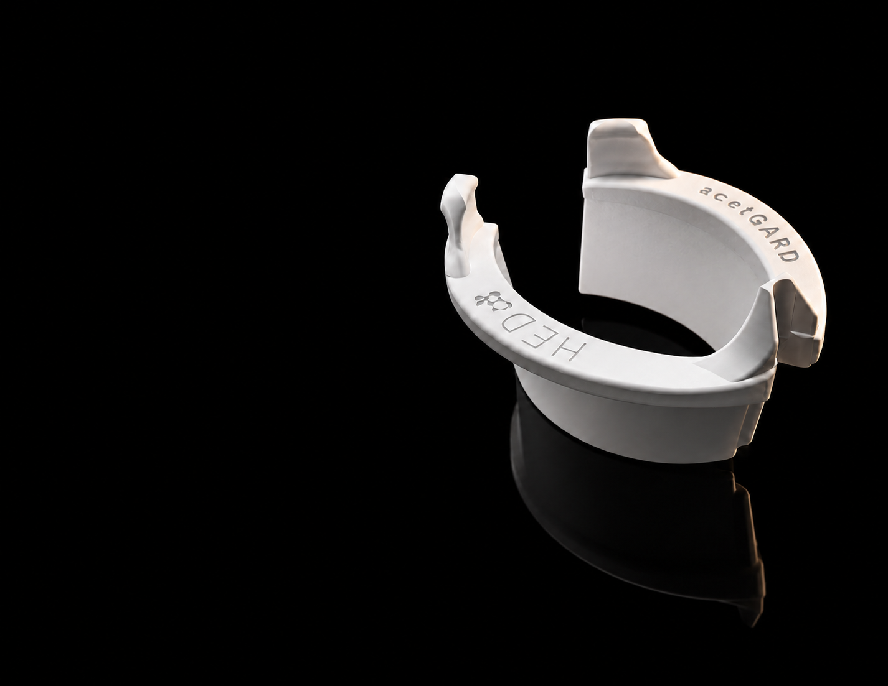
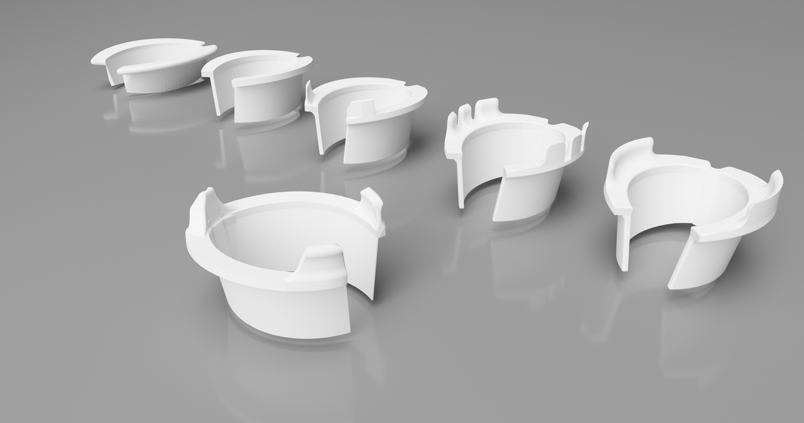
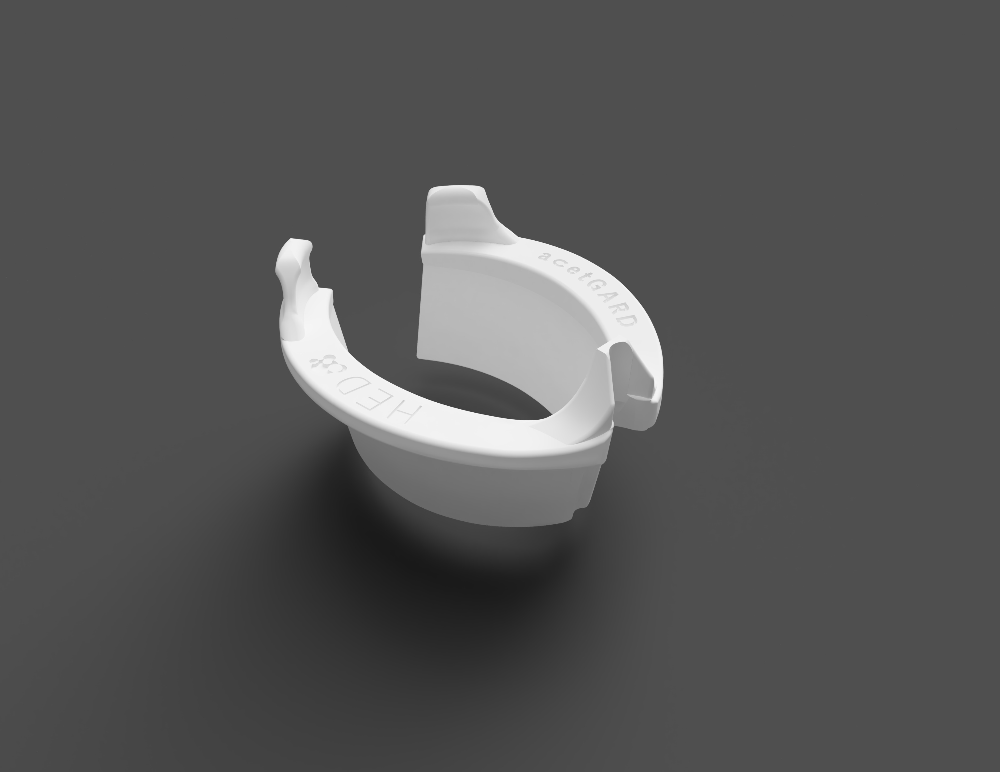
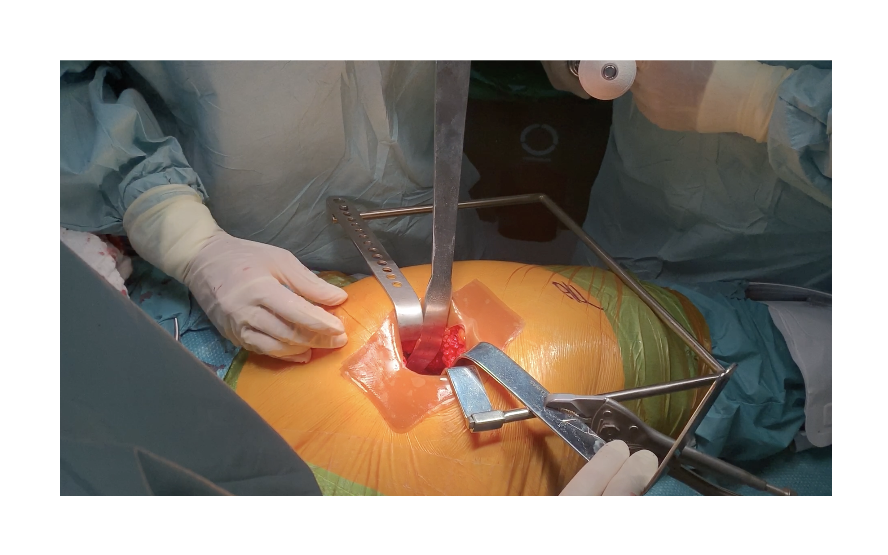
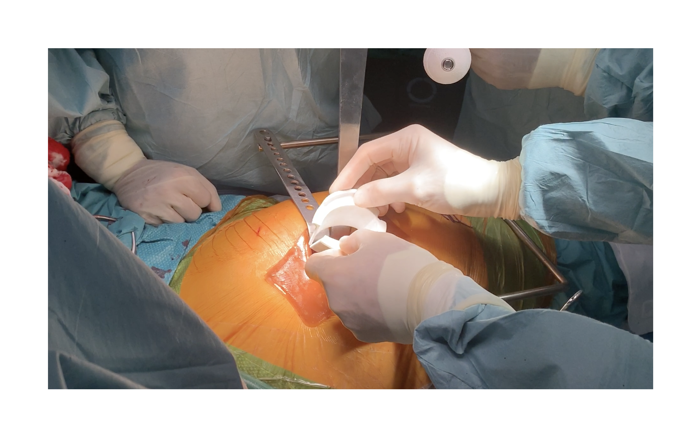

Medical Device · Health Engineering Design · 2022
Pat. CO2021015180A1
A protective barrier for total hip replacement surgery. AcetGard shields the acetabular component and surgical instruments from bacterial contact at the incision site, addressing the most preventable source of periprosthetic joint infection in one of orthopedics' most common procedures.
Total hip replacement is performed over 500,000 times per year in the United States alone. It is largely safe, but periprosthetic joint infection (PJI) is one of its most catastrophic complications. Revisions are painful, expensive, and sometimes impossible to complete successfully.
The primary contamination vector is bacterial transfer during implantation: the moment the acetabular component travels from the surgical tray, past the incision edges, into the joint cavity. No standard tool existed to interrupt that path. AcetGard was designed to own that window.
AcetGard is a sterile, single-use collar that seats around the incision-edge before implantation begins. Three retention prongs anchor it in place without requiring fixation tools. The internal radius isolates the component from all incision-edge contact throughout this step of the procedure.
The device had to satisfy competing requirements: sterile enough for a class II surgical environment, rigid enough to hold position under insertion of component, and open enough not to obstruct the surgeon's field of view. The form emerged through iterative CAD and physical prototyping, tested against standard acetabular cup sizes from 48mm to 58mm.
Each iteration tested a different balance between open access, retention force,
and compatibility with the standard acetabular impactor. The form progressively
opened from a near-complete ring to the final horseshoe profile.


AcetGard was tested intraoperatively in collaboration with an orthopedic surgical team from Fundacion Santa FE de Bogota. The sequence below documents the placement and active use of the device during a live procedure.

